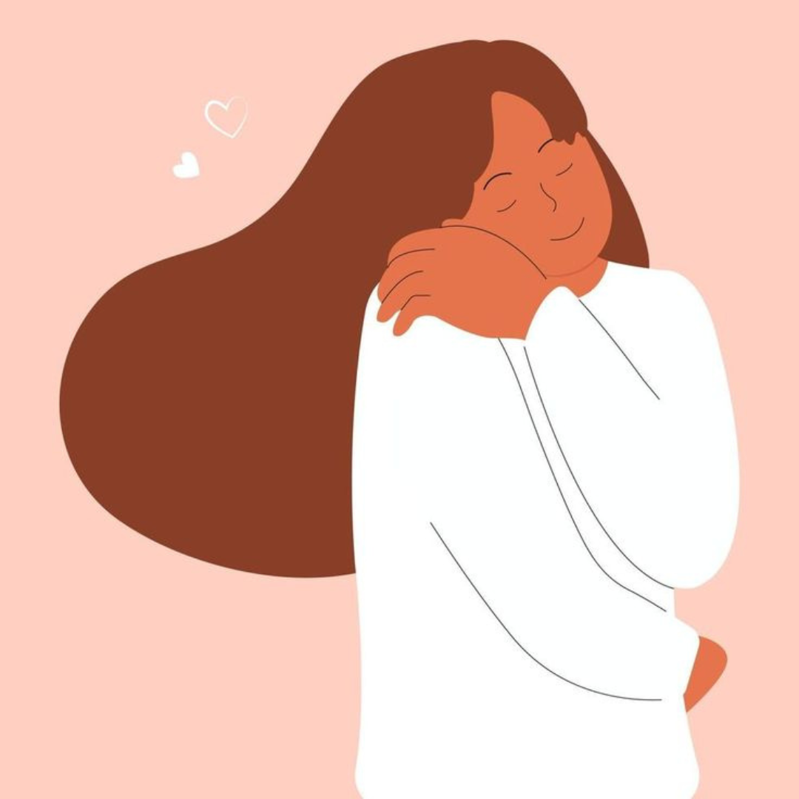

O que é o amor próprio e como praticá-lo no dia a dia?
Amor-próprio é a capacidade de reconhecer e valorizar a si mesmo, independentemente das circunstâncias externas...

Ansiedade: como identificar e lidar com os sintomas?
A ansiedade é uma resposta natural do nosso corpo a situações de estresse, perigo ou incerteza...
Relacionamentos e Conexões: Lidando com conflitos familiares...
Os conflitos familiares são inevitáveis em qualquer família...

O Impacto das Redes Sociais na Saúde Mental
As redes sociais transformaram a forma como nos conectamos, mas seu uso excessivo pode influenciar negativamente nossa saúde mental...

Como manter a produtividade sem sacrificar o bem-estar emocional
É possível equilibrar produtividade e saúde mental com estratégias que promovam resultados sem comprometer sua qualidade de vida...
Lidando com o luto: fases e cuidados emocionais
O luto é uma experiência universal e parte fundamental do processo de cura e aceitação...